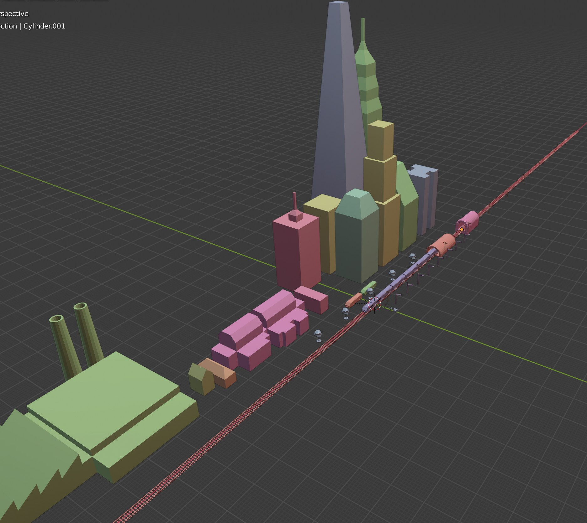
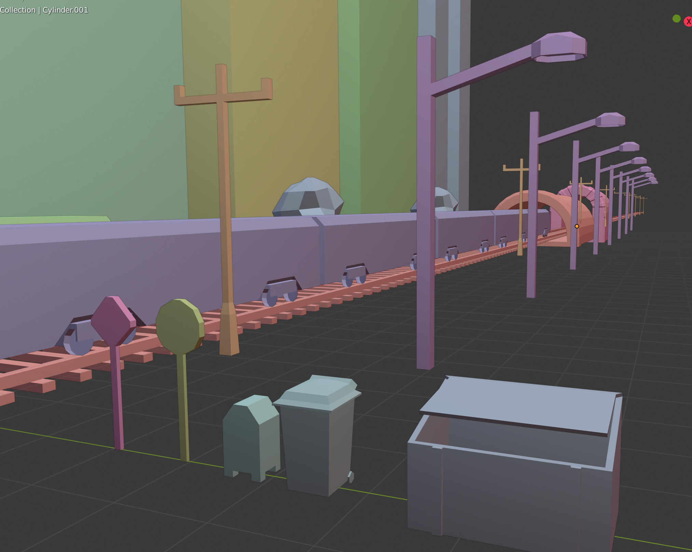
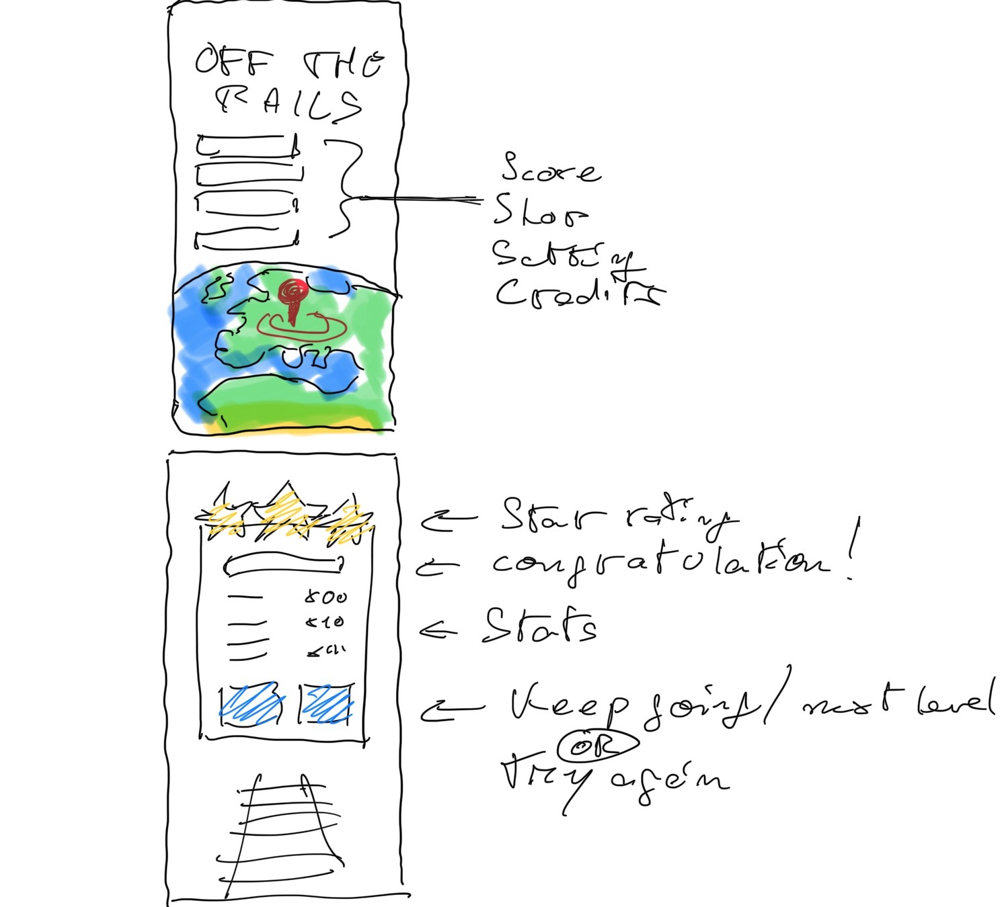
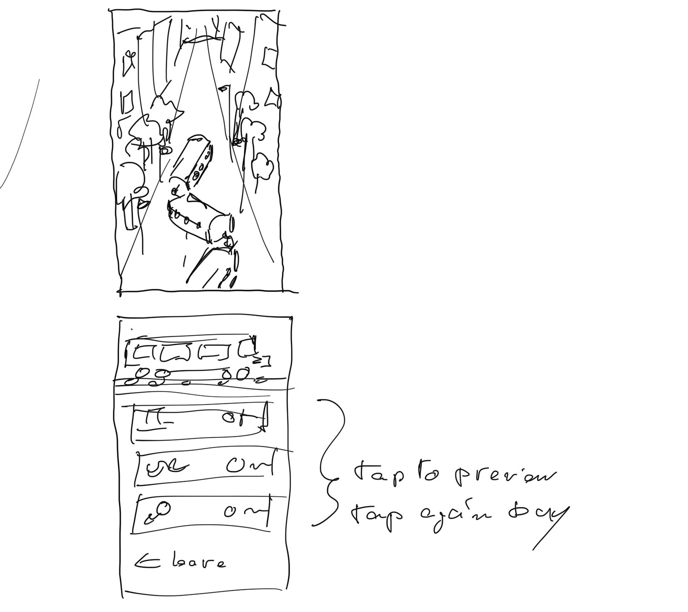

TrainGang
Our Goal
The goal of TrainGang is to provide the player with enjoyment
filled experince no matter how well or long they play. As the player,
you should have a rewarding experince wether you are tryharding the
levels in story mode or playing casually during your work break.


Gameplay
The Basics
In TrainGang, your goal as the player is to aquire the highest score
you can. To increase your score you collect coins to unlock more train
cars as you go thorugh a level. Your final score is tallied when complete
a level by pulling into a station, unless you are playing endless mode
of course, and your number of train cars and other stats determine your score.
This may sound simple, but the whole time you are having to ovoid obstacles such as
buildings, trees, rocks, space rocks, and maybe some aquatic animals.
Modes
The first mode avaliable is story mode. The goal of story mode to reach endless space.
To do so you will first have to pass through many other enviroments on earth. As a player
you will start out in a city with goal of passing the level without dying. If you do that
then you will move on to the next level which is determined by the amount of train cars
that successfully pulled into the station. From there you will continue onto each enviroment
until you successfully beat the story and end up in space.
The second mode, endless, is pretty simple. You start, but you don't finish. Your goal is to just go
and try to beat your highscore, going from random enviroment to enviroment.
Story Boards


Contributors
- Deven Dupre
- Team Leader, Gameplay Design, Scripting
- Christopher Chee
- User Interface, Scripting
- Vaylen Clark
- Sound Design, Scripting
- Pierre Gabory
- Graphic Design, 3D Modeling
- Jared Moise
- Lead Programmer, Scripting
- Ryan Supple
- Web Design, Scripting
BlowOut Games